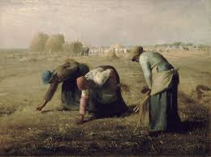

Cuadros de Ladino en Animal Crossing
En este mini blog descubre algunos de los cuadros que ofrece la gran colección que puedes comprar en la tienda de Ladino.
¡Cuidado con las falsificaciones!
Ver cuadros
Cuadros disponibles
Retrato Italiano
Basado en la "Mona Lisa" de Leonardo da Vinci.
Saber más
Retrato Perla
Representa "La Joven de la Perla" de Johannes Vermeer.
 Saber más
Saber más
Cuadro Holandés
Su nombre original es "La ronda de noche" de Rembrandt en 1642.
Saber más
Cuadro Segadores
Basado en "Las espigadoras" de Jean-François Millet.

Saber más
Cuadro Flores
Este cuadro está basado en el cuadro "Los Girasoles" de Vincent Van Gogh.
Saber más
Cuadro Invernal
Basado en el cuadro original de “Los cazadores en la nieve” de Pieter Brueghel el Viejo.
Saber más
Volver al inicio